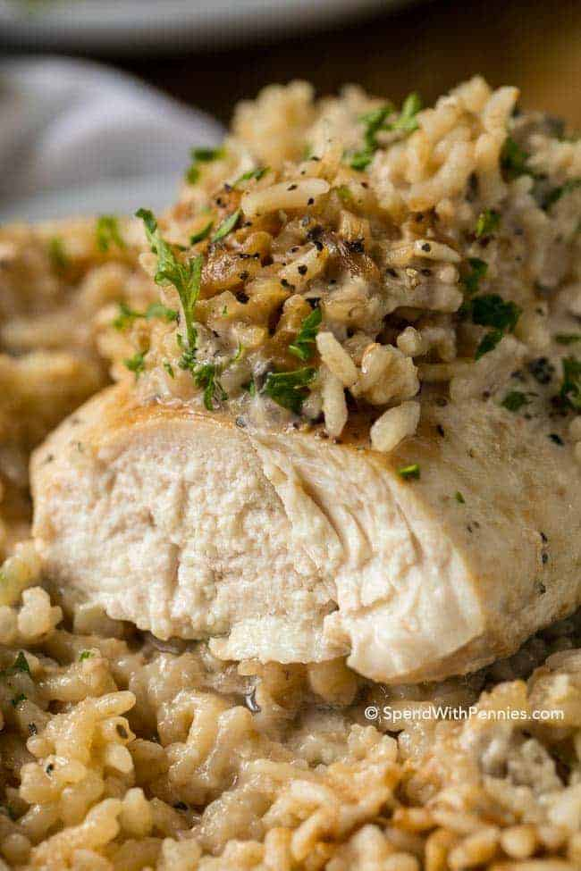

Easy Chicken & Rice Casserole

Description
This dish is made with only 5 ingredients, and has juicy chicken breasts and tender rice in a delicious and
creamy sauce. This is a casserole that packs a lot of flavour in a filling one dish dinner and a meal that
everyone will love!
Enjoy!
Ingredients
- 4 chicken breasts
- 1 cup of uncooked white rice
- 1 1/2 cups of water
- 1 package onion soup mix
- 10 ounces of cream of mushroom soup condensed
Steps
- Preheat oven to 325°F
- Spray 9×13 pan with cooking spray. Add chicken breasts and season with salt & pepper
- Pour uncooked rice over chicken. Sprinkle with onion soup mix
- Combine mushroom soup and 1 1/2 cups of water. Pour over chicken
- Cover and bake 1 hour 15 minutes or until rice is tender